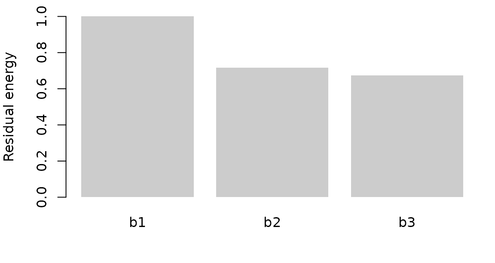

Build ordered image-feature hierarchies
Source:vignettes/feature-hierarchies.Rmd
feature-hierarchies.RmdWhen several network stages describe the same images, the first principal components of every stage often recover the same high-variance trajectory. A hierarchy transform turns those aligned blocks into compact scores and then into innovations: information that first becomes linearly available at a given stage.
You start with a named list of matrices — one stage per block, same rows — and finish with a named list you can pass to an encoding model.
What do the inputs look like?
The vignette uses a synthetic three-stage movie: a shared slow trajectory plus stage-specific signal. In a real analysis the blocks would be VGG activations after spatial pooling and, if you are modelling fMRI, after HRF convolution.
set.seed(1)
n <- 120
t <- seq_len(n) / n
shared <- cbind(sin(2 * pi * t), cos(2 * pi * t))
stage <- function(scale, p, noise) {
unique <- matrix(rnorm(n * 2), n, 2)
cbind(scale * shared, unique) %*% matrix(rnorm(4 * p), 4, p) +
matrix(rnorm(n * p, sd = noise), n, p)
}
blocks <- list(
b1 = stage(1.0, 18, 0.15),
b2 = stage(0.8, 18, 0.15),
b3 = stage(0.5, 18, 0.15)
)How do you compile the hierarchy?
Write a recipe, fit it on training rows, then apply it. The fit stores PCA maps and cross-stage coefficients, so each new row is transformed from its own stage values only.
recipe <- hierarchy_recipe(
order = c("b1", "b2", "b3"),
compress = block_pca(rank = 8, score_weighting = "whitened"),
decomposition = ordered_innovation(method = "svd"),
name_prefix = "vgg"
)
fit <- fit_hierarchy_transform(recipe, blocks)
features <- predict(fit, blocks)
names(features)
#> [1] "vgg_b1" "vgg_b2_innovation" "vgg_b3_innovation"The first band keeps the earliest stage. Later bands are innovations after removing everything already linearly available from earlier stages.
Did the decomposition separate the stages?
On the rows used to fit the maps, later innovations should be orthogonal to earlier scores. Linear CKA between those innovation blocks should be near zero.
diag <- hierarchy_diagnostics(fit, blocks)
diag$innovation[, c("stage", "residual_energy", "fraction_predictable")]
#> stage residual_energy fraction_predictable
#> 1 b1 1.0000000 0.0000000
#> 2 b2 0.7155572 0.2844428
#> 3 b3 0.6746763 0.3253237
round(diag$pairwise_cka, 3)
#> b1 b2 b3
#> b1 1 0 0
#> b2 0 1 0
#> b3 0 0 1Residual energy is the fraction of each compressed stage that remains after the earlier stages are projected out. A small value means that stage mostly repeated earlier information.

Can you apply the same maps to new rows?
Split the simulated movie, fit on the first half, and transform both halves. Batch membership cannot change a row: transforming 60 test rows together must match transforming any subset of those rows.
train <- subset_feature_blocks(blocks, 1:60)
test <- subset_feature_blocks(blocks, 61:120)
fit_half <- fit_hierarchy_transform(recipe, train)
test_features <- predict(fit_half, test)
invariance <- check_transform_invariance(fit_half, test)
invariance[c("batch_invariant", "permutation_equivariant")]
#> $batch_invariant
#> [1] TRUE
#>
#> $permutation_equivariant
#> [1] TRUEHeld-out CKA is not forced to zero. If it rebounds toward 1, the decomposition overfit the training segment.
held <- hierarchy_diagnostics(fit_half, train, heldout = test)
round(held$heldout$pairwise_cka, 3)
#> b1 b2 b3
#> b1 1.000 0.235 0.239
#> b2 0.235 1.000 0.127
#> b3 0.239 0.127 1.000Where do image models enter?
vgg16_block_end_spec() records one tap at the end of
each VGG-16 block and a depth-adaptive DCT pooler.
extract_feature_hierarchy() returns the named raw blocks;
you then fit the same recipe. Temporal alignment such as HRF convolution
stays outside this package.
spec <- vgg16_block_end_spec()
raw <- extract_feature_hierarchy(image_paths, spec = spec)
fit <- fit_hierarchy_transform(recipe, raw)residualize_tiers() remains a compatibility wrapper
around the same inductive maps.
Next steps
-
?hierarchy_recipeand?fit_hierarchy_transformfor compression and innovation options -
?vgg16_block_end_specfor the default VGG-16 taps -
?hierarchy_diagnosticsfor stimulus-only checks before any neural data